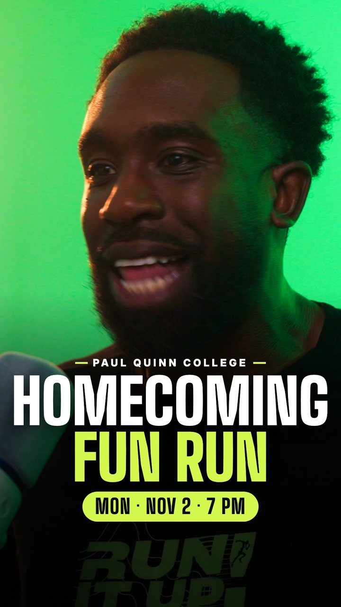
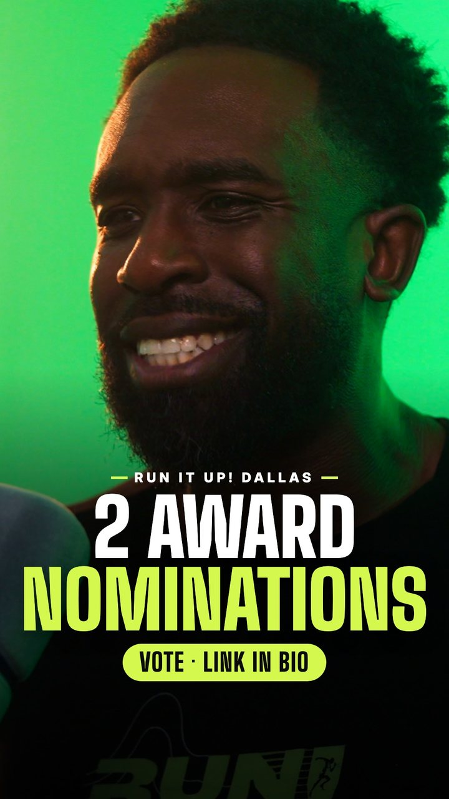
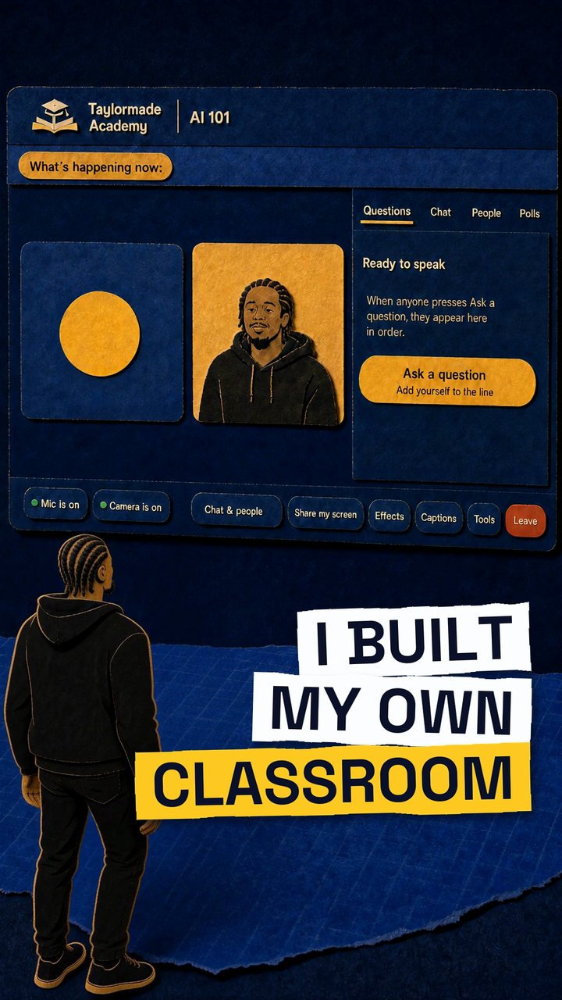
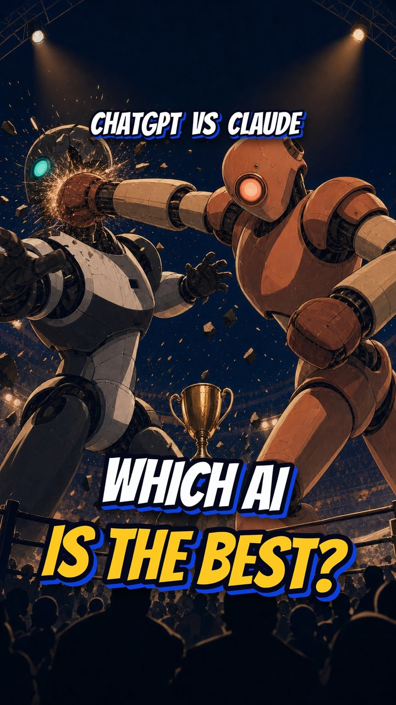

Taylormade Creative · Prepared for ASSET-U
A cinematic AI commercial, long-form podcast and training work, micro-lessons, learning platforms, social reels, AI hosts, AI twins and more, made by Elliott Taylor. The micro-lessons are the closest to the Micro Masterclass format.
A story-driven commercial, made in AI.
Full-length work to sit with: a complete podcast episode filmed and edited in our Dallas studio, an interview-led brand film, and an injector-training lesson with motion graphics.
A short lesson series for MEASURE. The presenter and the set are built entirely in AI. The voice is Elliott’s own, recorded for natural pacing.
Three learning platforms designed and built in-house: classes, live rooms, community and member sign-in. Each video is a short screen tour. The links open the live sites.
AI hosts that run the room on the big screen: opening the show, bringing up judges and trading lines with a university president on stage.
AI characters and digital versions of real people, plus vertical reels made for social.
Social reels
Talking-head reels shot on the podcast mics at the studio, finished with motion graphics, captions and b-roll. Two for a client, Run It Up! Dallas, and two from Elliott’s own channel, each with its cover.
The covers



